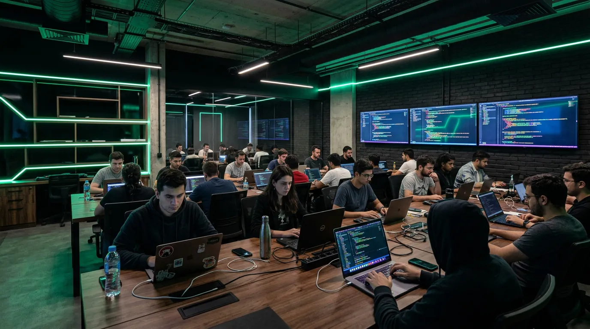
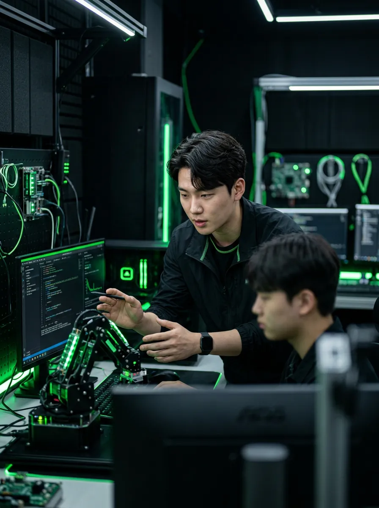
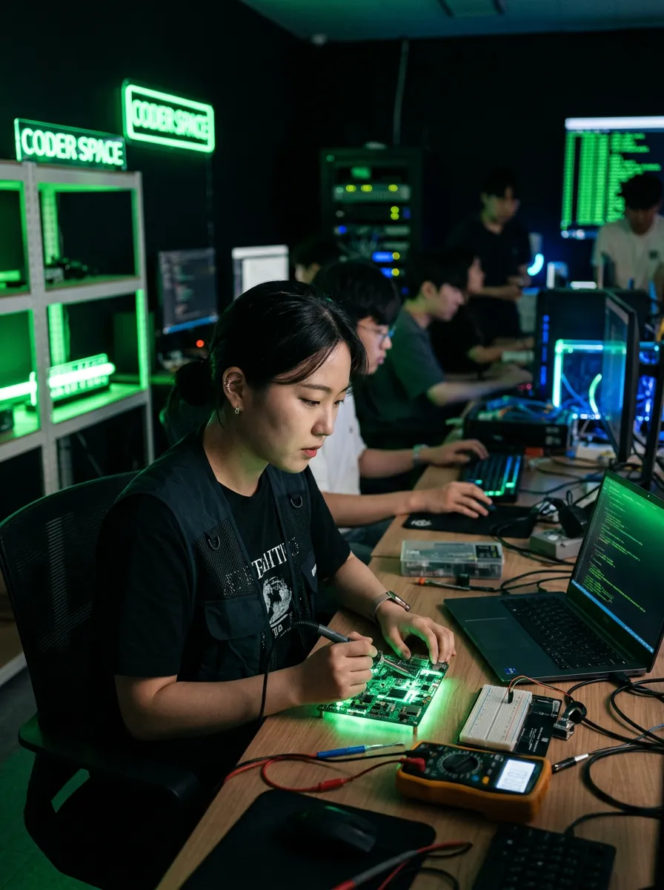
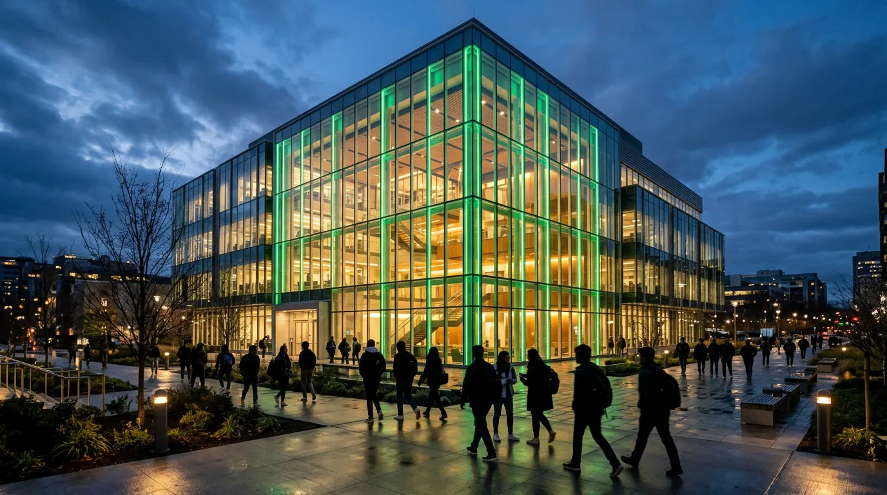

Since 2019 · Gangnam, Seoul
생각을 코드로,
코드를 커리어로
코드랩 아카데미는 현직 시니어 엔지니어가
직접 설계한 커리큘럼으로 당신의 전환을 돕습니다.
0
수료생
0
취업률 %
0
파트너 기업
Our Philosophy
코드는 도구일 뿐,
진짜 배우는 건
문제를 해결하는 사고
코드랩은 단순한 코딩 학원이 아닙니다. 우리는 기술 너머의 사고력을 가르칩니다. 프레임워크는 바뀌지만, 문제를 분석하고 해결하는 능력은 평생 갑니다.
모든 커리큘럼은 현직 시니어 엔지니어가 실무에서 매일 쓰는 패턴을 기반으로 설계됩니다. 이론이 아닌 경험에서 출발하는 교육, 그것이 코드랩의 차이입니다.
"Build to learn, not learn to build."
Your Journey
입학에서 취업까지,
5단계 여정
적성 진단
온라인 코딩 적성 테스트와 1:1 상담을 통해 당신에게 맞는 트랙을 찾습니다.
트랙 선택
Frontend, Backend, Data Science, AI/ML 중 전문 트랙을 선택합니다.
집중 학습
매일 8시간, 실무 프로젝트 중심 커리큘럼으로 깊이 있는 학습을 진행합니다.
포트폴리오 빌드
실제 서비스 수준의 팀 프로젝트를 완성하고, GitHub 포트폴리오와 기술 블로그를 정리합니다.
커리어 런칭
이력서 코칭, 모의 면접, 파트너 기업 매칭까지. 취업이 완료될 때까지 지원합니다.
Immersive Environment
함께 몰입하는 공간에서,
함께 성장합니다
듀얼 모니터 워크스테이션, 협업 라운지,
24시간 개방 학습실까지 — 몰입에 최적화된 환경.
Curriculum Tracks
당신의 목표에 맞는
전문 트랙
4개의 심화 트랙 중 하나를 선택하세요.
각 트랙은 6개월 풀타임 기준으로 설계되었습니다.
Frontend Engineering
React, Next.js, TypeScript 기반 모던 프론트엔드 개발. 디자인 시스템 구축부터 퍼포먼스 최적화까지.
Backend Engineering
Node.js, Python, PostgreSQL, Docker 기반 서버 아키텍처 및 API 설계.
Data Science
Python, Pandas, SQL, Tableau 활용 데이터 분석 및 시각화 전문가 양성.
AI / Machine Learning
TensorFlow, PyTorch, LLM 활용 AI 엔지니어링. 모델 설계부터 프로덕션 배포까지 실무 파이프라인을 경험합니다.
BOOTCAMP
₩4,800,000
6개월 풀타임 · 주 5일
PART-TIME
₩2,400,000
3개월 파트타임 · 주 3일 저녁
1:1 MENTORING
₩150,000
세션 당 · 60분
Mentors
현장에서 온 멘토,
현장으로 이끄는 가이드

김진우
Frontend Lead
Ex-네이버 · 10년 경력

박서연
Backend Architect
Ex-카카오 · 12년 경력

이한결
Data Science Lead
Ex-쿠팡 · 8년 경력

최유나
AI/ML Engineer
Ex-삼성 리서치 · 7년 경력
Proven Results
숫자가 증명하는
코드랩의 성과
0
취업률 (%)
0
평균 초봉 (만원)
0
누적 수료생
0
파트너 기업
WHERE OUR GRADUATES WORK
Testimonials
수료생들의
솔직한 이야기
비전공자로 6개월 부트캠프를 수료했습니다. 매일이 도전이었지만, 멘토들의 실무 피드백 덕분에 포트폴리오를 완성하고 네이버 파이낸셜에 입사했습니다.

김도현
Frontend · 2기 수료
마케터에서 데이터 엔지니어로 전직했습니다. 코드랩의 커리큘럼은 실무 프로젝트 위주라 취업 면접에서 바로 통했습니다. 감사합니다.

이수정
Data Science · 5기 수료
현직 개발자인데도 배울 게 많았습니다. 1:1 멘토링으로 시스템 설계 역량을 키웠고, 시니어 포지션으로 이직에 성공했습니다.
정하은
Backend · 멘토링 수강
AI 트랙 1기 수료생입니다. LLM 파인튜닝부터 배포까지 실습한 경험이 취업에 결정적이었어요. 지금은 스타트업에서 AI 엔지니어로 일하고 있습니다.
윤성민
AI/ML · 7기 수료
FAQ
자주 묻는 질문
네, 전체 수료생의 약 60%가 비전공자입니다. 기초 프로그래밍 과정부터 시작하며, 적성 테스트를 통해 적합한 트랙을 추천해드립니다. 사전 지식 없이도 충분히 따라올 수 있도록 커리큘럼이 설계되어 있습니다.
풀타임 부트캠프는 월~금 오전 10시~오후 7시 (점심 1시간 포함)입니다. 파트타임 과정은 월·수·금 저녁 7시~10시에 진행됩니다. 1:1 멘토링은 멘토와 시간을 조율하여 유연하게 진행합니다.
수료 후 최대 6개월간 취업 지원을 제공합니다. 이력서·포트폴리오 1:1 리뷰, 모의 기술 면접 (주 2회), 파트너 기업 채용 연계, 커리어 상담이 포함됩니다. 수료 후 3개월 내 취업률은 94%입니다.
최대 6개월 무이자 분할 납부가 가능합니다. 얼리버드 등록 시 10% 할인, 2인 이상 동시 등록 시 15% 할인이 적용됩니다. 국민내일배움카드 사용은 현재 지원하지 않습니다.
9기 부트캠프는 2026년 4월 7일 개강 예정이며, 3월 21일까지 얼리버드 등록이 가능합니다. 정원은 트랙별 20명으로 제한됩니다. 파트타임 과정은 매월 첫째 주 월요일에 시작합니다.
